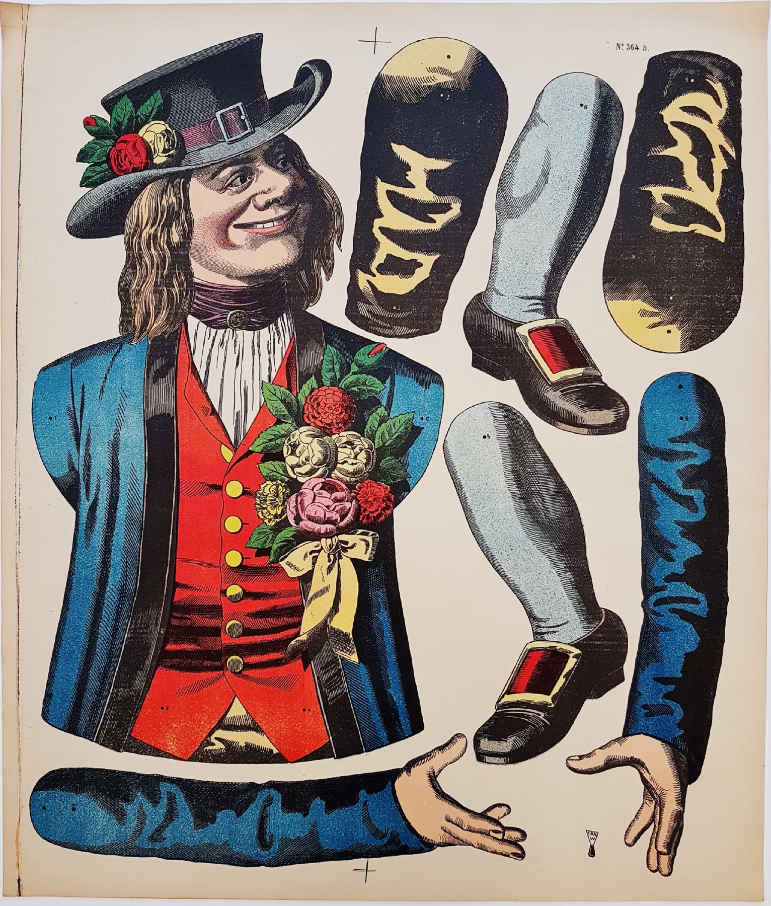

Private Collection
Funny Paper Jumping Jacks
Lithographs from the Wissembourg Printworks, 1880–1918
Original articulated lithographs from Wissembourg, collected over the years through the antiquarian market and preserved as vivid witnesses of popular print culture.

Browse the Collection
Thematic Categories

Harlequins
Commedia dell’arte characters, acrobats and playful stage figures.

Professions
Trades, occupations and working identities rendered as articulated figures.

Historical Figures
Characters drawn from literature, history and stylised visions of the past.

Warriors
Soldiers, legionaries and martial figures from different imagined worlds.

Father Christmas
Seasonal figures between folklore, gift-bringing traditions and festive theatre.

Character Types
Comic, eccentric and sharply observed figures with memorable silhouettes.

National and Regional Types
Figures framed as national or regional identities in the visual language of their time.